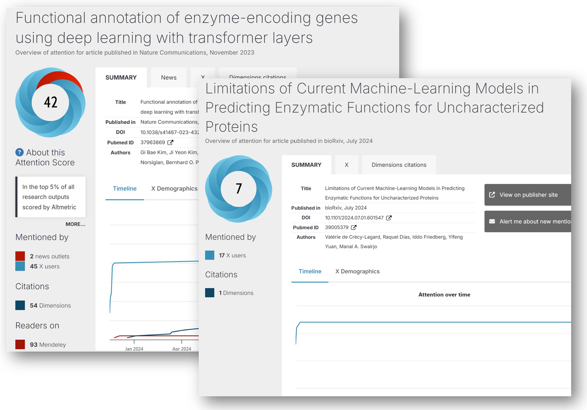
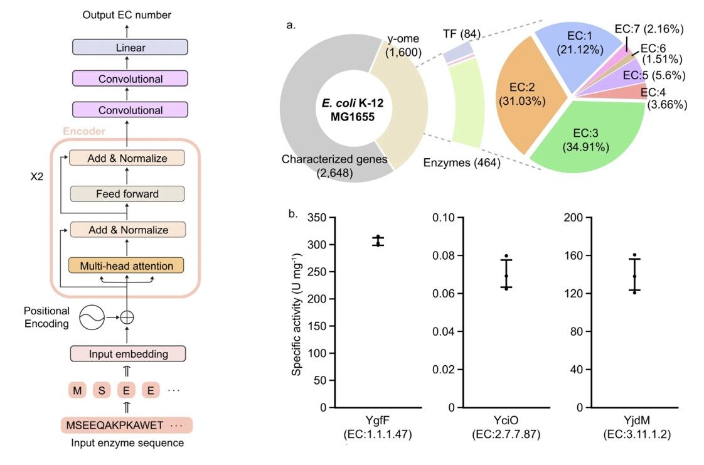
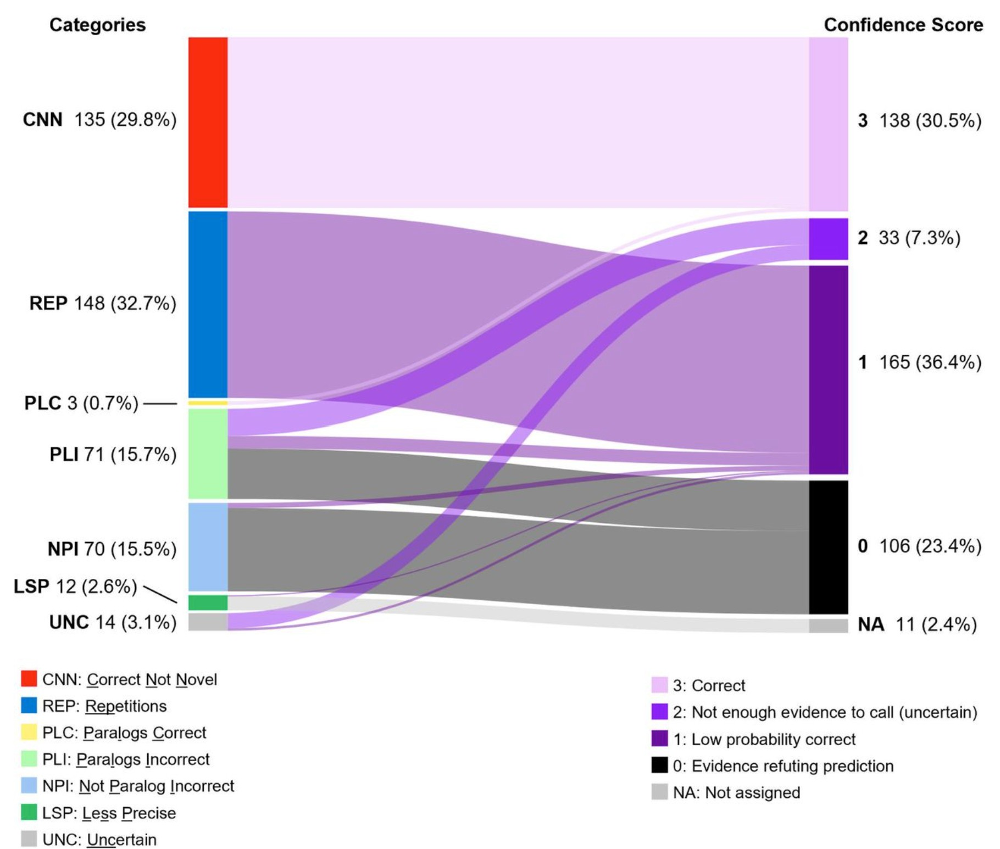
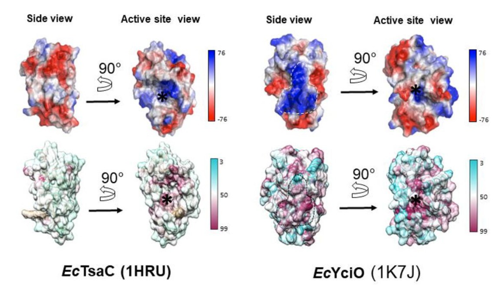
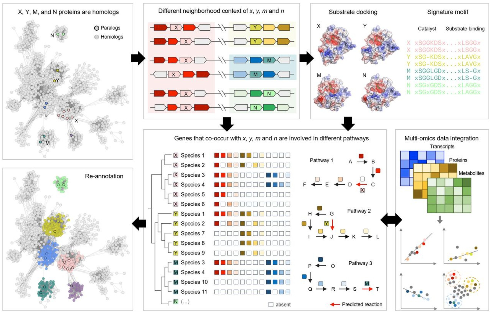
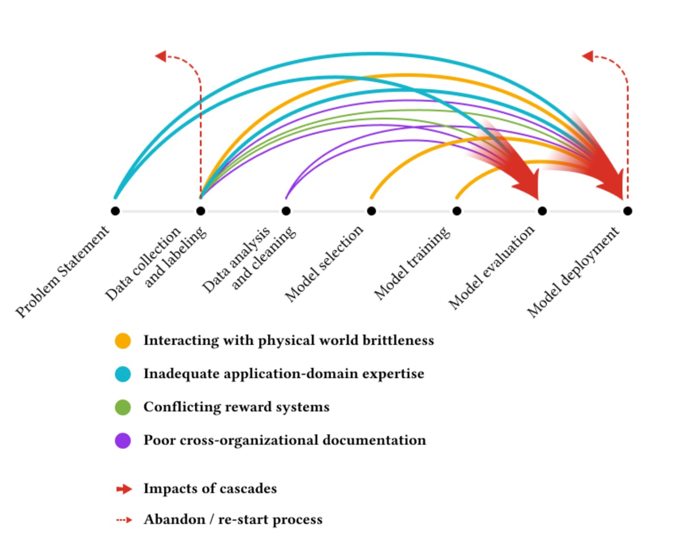

Deep learning is glamorous and highly rewarded. If you train and evaluate a Transformer (a state-of-the-art language model) on a dataset of 22 million enzymes and then use it to predict the function of 450 unknown enzymes, you can publish your results in Nature Communications (a very well-regarded publication). Your paper will be viewed 22,000 times and will be in the top 5% of all research outputs scored by Altmetric (a rating of how much attention online articles receive).
However, if you do the painstaking work of combing through someone else’s published work, and discovering that they are riddled with serious errors, including hundreds of incorrect predictions, you can post a pre-print to bioRxiv that will not receive even a fraction of the citations or views of the original. In fact, this is exactly what happened in the case of these two papers:
- Functional annotation of enzyme-encoding genes using deep learning with transformer layers | Nature Communications
- Limitations of Current Machine-Learning Models in Predicting Enzymatic Functions for Uncharacterized Proteins | bioRxiv

This pair of papers on enzyme function prediction make for a fascinating case study on the limits of AI in biology and the harms of current publishing incentives. I will walk through some of the details below, although I encourage you to read the papers for yourself. This contrast is a stark reminder of how hard it can be to evaluate the legitimacy of AI results without deep domain expertise.
The Problem of Determining Enzyme Function
Enzymes are what catalyze reactions, so they are crucial for making things happen in living organisms. Enzyme Commission (EC) numbers provide a hierarchical classification system for thousands of different functions. Given a sequence of amino acids (the building blocks of all proteins, including enzymes), can you predict what the EC number (and thus, the function) is? This seems like a problem that is custom-made for machine learning, with clearly defined inputs and outputs. Moreover, there is a rich dataset available, with over 22 million enzymes and their EC numbers listed in the online database UniProt.
An Approach with Transformers (AI model)
A research paper used a transformer deep learning model to predict the functions of enzymes with previously unknown functions. It seemed like a good paper! The authors used a reasonable, well-regarded neural network architecture (two transformer encoders, two convolutional layers, and a linear layer) that had been adopted from BERT. They looked at regions with high attention to confirm that these were biologically significant, which suggests that the model had learned underlying meaning and provided interpretability. They used a standard training, validation, and test split on a dataset with millions of entries. The researchers then applied the model to a dataset where no “ground truth” was known to make ~450 novel predictions. For these novel predictions, they randomly selected three to test in vitro and confirmed that the predictions were accurate.

The Errors
The Transformer model in the Nature Communications paper made hundreds of “novel” predictions that are almost certainly erroneous. The paper had followed a standard methodology of evaluating performance on a held-out test set, and did quite well on that (although later investigation suggests there may have been data leakage). The results claimed for enzymes where no ground truth is known were full of errors.
For instance, the gene E. coli YjhQ was predicted to be a mycothiol synthase, but mycothiol is not synthesized by E. coli at all! The gene yciO, which evolved from the gene TsaC, had already been shown a decade earlier in vivo to not have the same function as TsaC, yet the Nature Communications paper concluded it did have the same function.
Of the 450 “novel” results given in the paper, 135 of these results were not novel at all; they were already listed in the online database UniProt. Another 148 showed unreasonably high levels of repetition, with the same very specific enzyme functions reappearing up to 12 times for genes of E. coli, which biologically implausible.

The Microbiology Detective
How did these errors come to light? After the model had been trained, validated, and evaluated on a dataset involving millions of entries, it was used to make ~450 novel predictions, and three of these were tested in vitro. It just so happens that one of the enzymes selected for in vitro testing, yciO, had already been studied extensively over a decade earlier by Dr. de Crécy-Lagard. When Dr. de Crécy-Lagard read that deep learning had predicted that yciO had the same function of another gene, TsaC, she knew from her long years in the lab that this was incorrect. Her previous research had shown that the TsaC gene is essential in E. coli even if yciO is present in the same genome and even when yciO gene is overexpressed. Moreover, the yciO activity reported by Kim et al. is more than four orders of magnitude (i.e. 10,000 times) weaker than that of TsaC. All this suggests that yciO does NOT serve the same key function as TsaC.

YciO and TsaC do have structural similarities, and YciO evolved from an ancestor of TsaC. Decades of research on protein and enzyme evolution have shown that new functions often evolve via duplication of an existing gene, followed by diversification of its function. This poses a common pitfall in determining enzyme function, because the genes will have many similarities with the ones they duplicated and then diversified from.
Thus, looking at structural similarities is only one type of evidence for considering enzyme function. It is also crucial to look at other types of evidence, such as neighborhood context of the genes, substrate docking, gene co-occurrence in metabolic pathways, and other features of the enzymes.

Hundreds of Likely Erroneous Results
Spotting this one error inspired de Crécy-Lagard and her co-authors to take a closer look at all of the enzymes found to have novel results in the Kim, et al, paper. They found that 135 of these results were already listed in the online database used to build the training set and thus not actually novel. An additional 148 of the results contained a very high level of repetition, with the same highly specific functions reappearing up to 12 times. Biases, data imbalance, lack of relevant features, architectural limitations, or poor uncertainty calibration can all lead models to “force” the most common labels from the training data.
Other examples were proven wrong via biological context or a literature search. For instance, the gene YjhQ was predicted to be a mycothiol synthase but mycothiol is not synthesized by E. coli. YrhB was predicted to synthesize a particular compound, which was already predicted to be synthesized by the enzyme QueD. A form of E. coli with a QueD mutant was unable to synthesize the compound, showing that this is not in fact the function of YrhB.
Rethinking Enzyme Classification and “True Unknowns”
Identifying enzyme function actually consists of two quite different problems which are commonly conflated:
- propagating known function labels to enzymes in the same functional family
- discovering truly unknown functions
The authors of the second paper observe, “By design, supervised ML-models cannot be used to predict the function of true unknowns.” While machine learning can be useful for propagating known functions to additional enzymes, there are many types of errors that can occur: including failing to propagate labels when they should, propagating labels when they should not, curation mistakes, and experimental mistakes. Unfortunately, erroneous functions are being entered into key online databases such as UniProt, and this incorrect data may be further propagated if it is used to train prediction models. This is a problem that increases over time.
Need for Domain Expertise
It is not news that AI work will be more highly rewarded and supported than work that closely inspects the underlying data and integrates deep domain knowledge. The aptly titled “Everyone Wants to do the Model Work, not the Data Work” paper involving dozens of machine learning practitioners working on high-stakes AI projects and found that inadequate-application domain expertise was one of a few key causes of catastrophic failures.

These papers also serve as a reminder of how challenging (or even impossible) it can be to evaluate AI claims in work outside our own area of expertise. I am not a domain expert in the enzyme functions of E. coli. And for most deep learning papers I read, domain experts have not gone through the results with a fine-tooth comb inspecting the quality of the output. How many other seemingly-impressive papers would not stand up to scrutiny? The work of checking hundreds of enzyme predictions is less glamorous than the work of building the AI model that generated them, yet it is even more important. How can we better incentivize this type of error-checking research?
At a time when funding is being slashed, I believe we should be doing the opposite and investing even more into a range of scientific and biomedical research, from a variety of angles. And we need to push back on an incentive system that is disproportionately focused on flashy AI solutions at the expense of quality results.
I look forward to reading your responses. Create a free GitHub account to comment below.